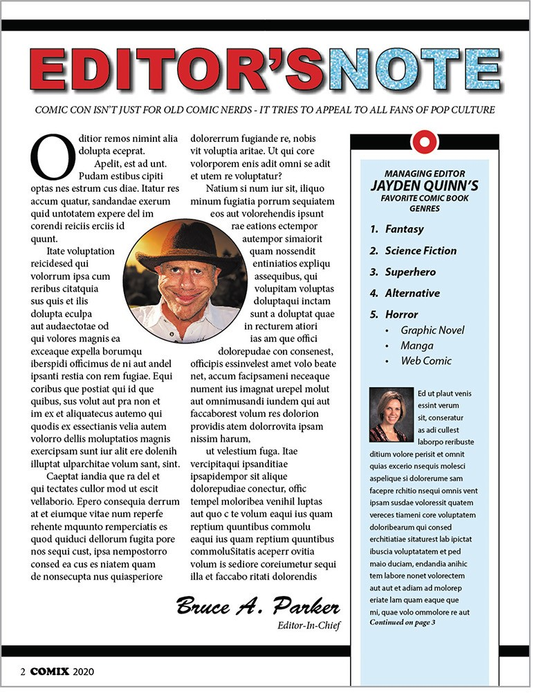
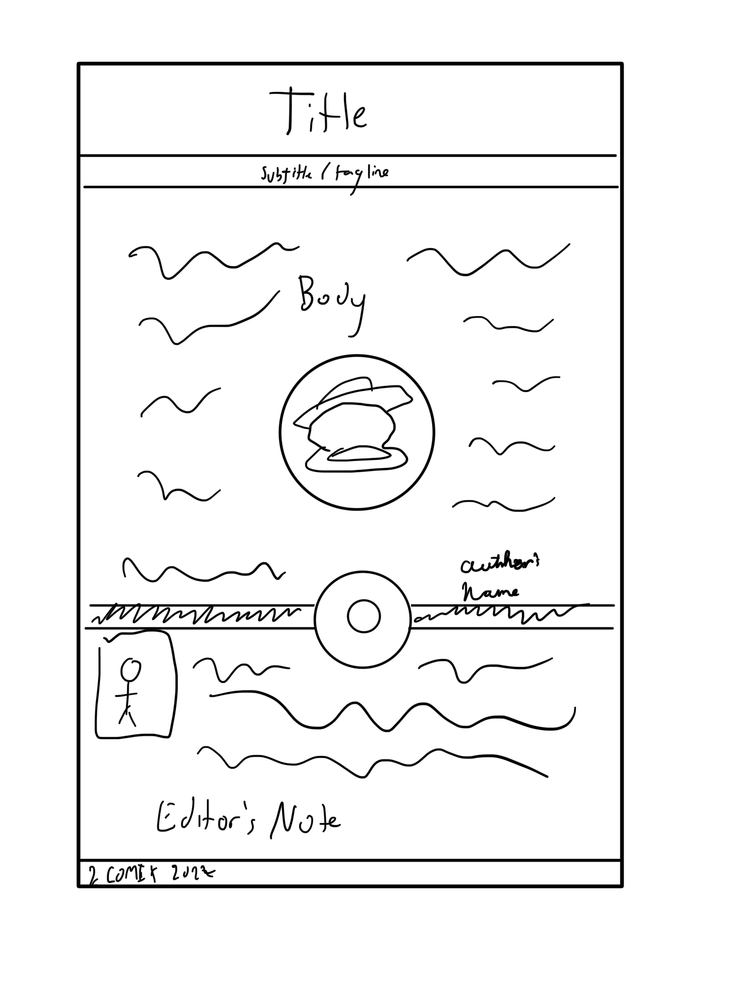

Project Page
Goal: My main goal for this site is to turn it into a page that I can gush about one of my favorite RPG series, The Legend of Heroes (or Trails Series). I wanted two separate sections. One for a general overview of the series and another on which game to play first, since that comes into question a lot.
A lot of the design choices relates to the hierarchy of the site I evision. I want the general overview to be front-and-center, making it the largest segment. Then, as an aisde, there will be a small segment related to starting the series.
Notes (Phase 1): The main challenges I encountered related to wrapping and shapes. The original design I was using included a red donut shape that I couldn't quite figure out the best way to go about implementing it, since the large box it's on is the top border of the segment. I spent so much time trying to figure out how to get the text to properly wrap around the images on both sides. I've used two overlapping images in different columns here, but for some odd reason I could never figure out, the ellipse that is being used to adjust the flow of text around the image are being cut off at the top and bottom, which prevented me from getting the flow of text to be perfectly round.
Notes (Phase 2): Once again, the images were a massive headache in this second phase of development. I just couldn't get the ellipse that the image is accompanied by looking right. I got it to a point I was satisfied with, it get's the job done, but the ellipse just appears cut off and not right. Other than that, everything was smooth sailing.
The color scheme I used is the primary orange and blue colors that make up the main color of the protagonists' design in Trails in the Sky. Joshua mainly wears a blue and Estelle is orange. The one big change was due to feedback, which was removing the columns of the body text when the screen size gets too small for better readability. I've also only dealt with two main fonts and one extra cursive font as a fancy signature. I couldn't bring myself to change that one.
Original Design

Guides:
Images
Fonts Used:
Mobile Mockup:
